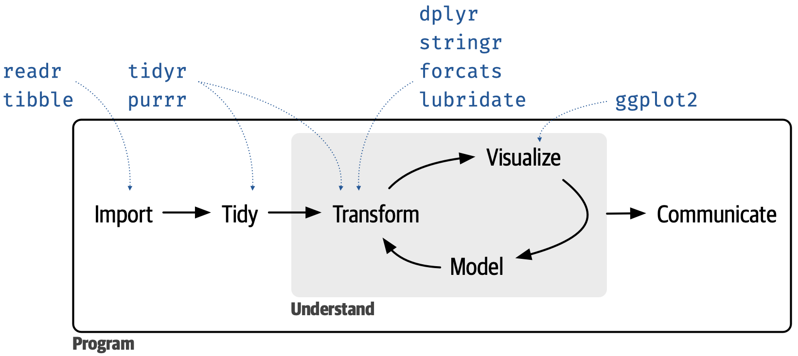

install.packages("tidyverse")Pengenalan tidyverse Part1: dplyr
R Programming
Materi ini akan membahas pengenalan meta-package tidyverse yang merupakan kumpulan dari 8 package inti, yaitu
readrdigunakan untuk membaca data tabular seperti csv,tsv dan fwfdplyrdigunakan untuk memanipulasi dataggplot2digunakan untuk visualisasi data berbasiskan Grammar of Graphicstidyrdigunakan untuk merapihkan (tidying) datapurrrdigunakan untuk functional programmingtibbledigunakan sebagai alternatifdata.frameyang lebih konsistenforcatsdigunakan untuk memanipulasi data berupa yang bertipefactorstringrdigunakan untuk memanipulasi data bertipestring

Menginstall Meta-Package tidyverse
Pada penggunaan pertama, silahkan install terlebih dulu package yang akan digunakan dengan cara menuliskan code berikut:
Memanggil Package
library(tidyverse)── Attaching core tidyverse packages ──────────────────────── tidyverse 2.0.0 ──
✔ dplyr 1.1.4 ✔ readr 2.1.4
✔ forcats 1.0.0 ✔ stringr 1.5.1
✔ ggplot2 3.4.4 ✔ tibble 3.2.1
✔ lubridate 1.9.3 ✔ tidyr 1.3.0
✔ purrr 1.0.2
── Conflicts ────────────────────────────────────────── tidyverse_conflicts() ──
✖ dplyr::filter() masks stats::filter()
✖ dplyr::lag() masks stats::lag()
ℹ Use the conflicted package (<http://conflicted.r-lib.org/>) to force all conflicts to become errorsData
Global Country Information Dataset 2023
Dataset komprehensif ini menyediakan banyak informasi tentang semua negara di seluruh dunia, yang mencakup berbagai indikator dan atribut. Data ini mencakup statistik demografi, indikator ekonomi, faktor lingkungan, metrik perawatan kesehatan, statistik pendidikan, dan masih banyak lagi. Dengan setiap negara terwakili, dataset ini menawarkan perspektif global yang lengkap tentang berbagai aspek negara, memungkinkan analisis mendalam dan perbandingan lintas negara.
Berikut adalah penjelasan kolom-kolom yang ada di dalam data:
- Country: Name of the country.
- Density (P/Km2): Population density measured in persons per square kilometer.
- Abbreviation: Abbreviation or code representing the country.
- Agricultural Land (%): Percentage of land area used for agricultural purposes.
- Land Area (Km2): Total land area of the country in square kilometers.
- Armed Forces Size: Size of the armed forces in the country.
- Birth Rate: Number of births per 1,000 population per year.
- Calling Code: International calling code for the country.
- Capital/Major City: Name of the capital or major city.
- CO2 Emissions: Carbon dioxide emissions in tons.
- CPI: Consumer Price Index, a measure of inflation and purchasing power.
- CPI Change (%): Percentage change in the Consumer Price Index compared to the previous year.
- Currency_Code: Currency code used in the country.
- Fertility Rate: Average number of children born to a woman during her lifetime.
- Forested Area (%): Percentage of land area covered by forests.
- Gasoline_Price: Price of gasoline per liter in local currency.
- GDP: Gross Domestic Product, the total value of goods and services produced in the country.
- Gross Primary Education Enrollment (%): Gross enrollment ratio for primary education.
- Gross Tertiary Education Enrollment (%): Gross enrollment ratio for tertiary education.
- Infant Mortality: Number of deaths per 1,000 live births before reaching one year of age.
- Largest City: Name of the country’s largest city.
- Life Expectancy: Average number of years a newborn is expected to live.
- Maternal Mortality Ratio: Number of maternal deaths per 100,000 live births.
- Minimum Wage: Minimum wage level in local currency.
- Official Language: Official language(s) spoken in the country.
- Out of Pocket Health Expenditure (%): Percentage of total health expenditure paid out-of-pocket by individuals.
- Physicians per Thousand: Number of physicians per thousand people.
- Population: Total population of the country.
- Population: Labor Force Participation (%): Percentage of the population that is part of the labor force.
- Tax Revenue (%): Tax revenue as a percentage of GDP.
- Total Tax Rate: Overall tax burden as a percentage of commercial profits.
- Unemployment Rate: Percentage of the labor force that is unemployed.
- Urban Population: Percentage of the population living in urban areas.
- Latitude: Latitude coordinate of the country’s location.
- Longitude: Longitude coordinate of the country’s location.
Data dapat diperoleh dengan mendownload link dibawah ini
Import data
country_data <- read_csv("world-data-2023.csv",show_col_types = FALSE)Mengenal dplyr
dplyr adalah package yang dapat digunakan untuk melakukan manipulasi data seperti melihat gambaran umum data, membuat kolom baru, menyeleksi kolom, menyaring baris (filtering), melakukan agregasi data dan masih banyak lagi.
Fungsi glimpse
Fungsi glimpse digunakan untuk mendapatkan gambaran umum data seperti tipe data (dbl,int,chr,factor,lgl), snapshoot amatan-amatan awal, banyaknya baris dan banyaknya kolom
glimpse(country_data)Rows: 195
Columns: 35
$ Country <chr> "Afghanistan", "Albania", …
$ `Density\n(P/Km2)` <dbl> 60, 105, 18, 164, 26, 223,…
$ Abbreviation <chr> "AF", "AL", "DZ", "AD", "A…
$ `Agricultural Land( %)` <chr> "58.10%", "43.10%", "17.40…
$ `Land Area(Km2)` <dbl> 652230, 28748, 2381741, 46…
$ `Armed Forces size` <dbl> 323000, 9000, 317000, NA, …
$ `Birth Rate` <dbl> 32.49, 11.78, 24.28, 7.20,…
$ `Calling Code` <dbl> 93, 355, 213, 376, 244, 1,…
$ `Capital/Major City` <chr> "Kabul", "Tirana", "Algier…
$ `Co2-Emissions` <dbl> 8672, 4536, 150006, 469, 3…
$ CPI <dbl> 149.90, 119.05, 151.36, NA…
$ `CPI Change (%)` <chr> "2.30%", "1.40%", "2.00%",…
$ `Currency-Code` <chr> "AFN", "ALL", "DZD", "EUR"…
$ `Fertility Rate` <dbl> 4.47, 1.62, 3.02, 1.27, 5.…
$ `Forested Area (%)` <chr> "2.10%", "28.10%", "0.80%"…
$ `Gasoline Price` <chr> "$0.70", "$1.36", "$0.28",…
$ GDP <chr> "$19,101,353,833", "$15,27…
$ `Gross primary education enrollment (%)` <chr> "104.00%", "107.00%", "109…
$ `Gross tertiary education enrollment (%)` <chr> "9.70%", "55.00%", "51.40%…
$ `Infant mortality` <dbl> 47.9, 7.8, 20.1, 2.7, 51.6…
$ `Largest city` <chr> "Kabul", "Tirana", "Algier…
$ `Life expectancy` <dbl> 64.5, 78.5, 76.7, NA, 60.8…
$ `Maternal mortality ratio` <dbl> 638, 15, 112, NA, 241, 42,…
$ `Minimum wage` <chr> "$0.43", "$1.12", "$0.95",…
$ `Official language` <chr> "Pashto", "Albanian", "Ara…
$ `Out of pocket health expenditure` <chr> "78.40%", "56.90%", "28.10…
$ `Physicians per thousand` <dbl> 0.28, 1.20, 1.72, 3.33, 0.…
$ Population <dbl> 38041754, 2854191, 4305305…
$ `Population: Labor force participation (%)` <chr> "48.90%", "55.70%", "41.20…
$ `Tax revenue (%)` <chr> "9.30%", "18.60%", "37.20%…
$ `Total tax rate` <chr> "71.40%", "36.60%", "66.10…
$ `Unemployment rate` <chr> "11.12%", "12.33%", "11.70…
$ Urban_population <dbl> 9797273, 1747593, 31510100…
$ Latitude <dbl> 33.939110, 41.153332, 28.0…
$ Longitude <dbl> 67.709953, 20.168331, 1.65…Fungsi select
Fungsi select digunakan untuk menyeleksi kolom dari dataset yang ada
select(.data = country_data,Country,`Birth Rate`,Urban_population,GDP, `Gasoline Price`)# A tibble: 195 × 5
Country `Birth Rate` Urban_population GDP `Gasoline Price`
<chr> <dbl> <dbl> <chr> <chr>
1 Afghanistan 32.5 9797273 $19,101,3… $0.70
2 Albania 11.8 1747593 $15,278,0… $1.36
3 Algeria 24.3 31510100 $169,988,… $0.28
4 Andorra 7.2 67873 $3,154,05… $1.51
5 Angola 40.7 21061025 $94,635,4… $0.97
6 Antigua and Barbuda 15.3 23800 $1,727,75… $0.99
7 Argentina 17.0 41339571 $449,663,… $1.10
8 Armenia 14.0 1869848 $13,672,8… $0.77
9 Australia 12.6 21844756 $1,392,68… $0.93
10 Austria 9.7 5194416 $446,314,… $1.20
# ℹ 185 more rowssintaks diatas dapat ditulis dalam bentuk lain yaitu
country_data %>%
select(Country,`Birth Rate`,Urban_population,GDP, `Gasoline Price`)# A tibble: 195 × 5
Country `Birth Rate` Urban_population GDP `Gasoline Price`
<chr> <dbl> <dbl> <chr> <chr>
1 Afghanistan 32.5 9797273 $19,101,3… $0.70
2 Albania 11.8 1747593 $15,278,0… $1.36
3 Algeria 24.3 31510100 $169,988,… $0.28
4 Andorra 7.2 67873 $3,154,05… $1.51
5 Angola 40.7 21061025 $94,635,4… $0.97
6 Antigua and Barbuda 15.3 23800 $1,727,75… $0.99
7 Argentina 17.0 41339571 $449,663,… $1.10
8 Armenia 14.0 1869848 $13,672,8… $0.77
9 Australia 12.6 21844756 $1,392,68… $0.93
10 Austria 9.7 5194416 $446,314,… $1.20
# ℹ 185 more rowsHasil dari kedua sintaks tersebut sama. Simbol %>% dinamakan pipe-operator
Operator %>%
Operator %>% digunakan untuk mengantarkan kita dari step satu ke step yang lainnya. Misalnya saja sintkas dibawah ini
country_data %>%
select(Country, Urban_population) %>%
filter(Urban_population < 10000)# A tibble: 2 × 2
Country Urban_population
<chr> <dbl>
1 Liechtenstein 5464
2 Tuvalu 7362Sintaks diatas dapat dibaca sebagai berikut: * Step 1 menyiapkan objek data yaitu country_data * Step 2 memilih kolom Country dan Urban_population berdasarkan step 1 * Step 3 menyaring Urban_population < 10000 berdasarkan objek data pada step 2
Jika kita hilangkan step 3 maka sintaksnya akan menjadi seperti ini
country_data %>%
select(Country, Urban_population)# A tibble: 195 × 2
Country Urban_population
<chr> <dbl>
1 Afghanistan 9797273
2 Albania 1747593
3 Algeria 31510100
4 Andorra 67873
5 Angola 21061025
6 Antigua and Barbuda 23800
7 Argentina 41339571
8 Armenia 1869848
9 Australia 21844756
10 Austria 5194416
# ℹ 185 more rowsOperator %>% juga memastikan bahwa objek data selalu berada di step 1. Kemudian, Operator %>% bisa dikeluarkan dengan shortcut keyboard ctrl+shift+m pada windows (macos menyesuaikan).
Fungsi filter
fungsi filter digunakan untuk menyaring baris berdasarkan pernyataan logika tertentu. Pernyataan logika adalah suatu pernyataan yang menghasilkan TRUE atau FALSE dan biasanya menggunakan operator logika seperti <,>,<=,>=,!=, &,| dan ==.
country_data %>%
select(Country, Urban_population) %>%
filter(Urban_population == 1747593)# A tibble: 1 × 2
Country Urban_population
<chr> <dbl>
1 Albania 1747593country_data %>%
select(Country, Urban_population) %>%
filter(Urban_population > 1747593)# A tibble: 132 × 2
Country Urban_population
<chr> <dbl>
1 Afghanistan 9797273
2 Algeria 31510100
3 Angola 21061025
4 Argentina 41339571
5 Armenia 1869848
6 Australia 21844756
7 Austria 5194416
8 Azerbaijan 5616165
9 Bangladesh 60987417
10 Belarus 7482982
# ℹ 122 more rowscountry_data %>%
select(Country, Urban_population) %>%
filter(Country=="Indonesia")# A tibble: 1 × 2
Country Urban_population
<chr> <dbl>
1 Indonesia 151509724country_data %>%
select(Country, Urban_population) %>%
filter(Country%in%c("Indonesia","Malaysia","Thailand","Singapore","Papua"))# A tibble: 4 × 2
Country Urban_population
<chr> <dbl>
1 Indonesia 151509724
2 Malaysia 24475766
3 Singapore 5703569
4 Thailand 35294600Selain menggunakan operator logika, kita bisa menggunakan fungsi str_detect dari package stringr untuk melakukan filtering jika kita tidak yakin dengan nama persis negaranya. Dalam sintaks sebelumnya dapat diperhatikan bahwa negara Papua tidak muncul karena mungkin nama Papua salah atau kurang lengkap. Berikut ilustrasi penggunaan str_detect.
country_data %>%
select(Country, Urban_population) %>%
filter(str_detect(Country,"Papua"))# A tibble: 1 × 2
Country Urban_population
<chr> <dbl>
1 Papua New Guinea 1162834country_data %>%
select(Country, Urban_population) %>%
filter(str_detect(Country,"Papua")|str_detect(Country,"Timor"))# A tibble: 2 × 2
Country Urban_population
<chr> <dbl>
1 Papua New Guinea 1162834
2 East Timor 400182Fungsi arrange
Fungsi arrange digunakan untuk mengurutkan kolom besar ke kecil atau sebaliknya.
country_data %>%
select(Country, Urban_population) %>%
filter(Urban_population > 1747593 & Urban_population <= 6084994) %>%
arrange(Urban_population)# A tibble: 50 × 2
Country Urban_population
<chr> <dbl>
1 Armenia 1869848
2 Lithuania 1891013
3 Gabon 1949694
4 Central African Republic 1982064
5 Rwanda 2186104
6 Georgia 2196476
7 South Sudan 2201250
8 Mongolia 2210626
9 Croatia 2328318
10 Kyrgyzstan 2362644
# ℹ 40 more rowsjika ingin mengurutkan dari besar ke kecil cukup tambahkan desc
country_data %>%
select(Country, Urban_population) %>%
filter(Urban_population > 1747593 & Urban_population <= 6084994) %>%
arrange(desc(Urban_population))# A tibble: 50 × 2
Country Urban_population
<chr> <dbl>
1 Lebanon 6084994
2 Nepal 5765513
3 Singapore 5703569
4 Benin 5648149
5 Honduras 5626433
6 Azerbaijan 5616165
7 Libya 5448597
8 Bulgaria 5256027
9 Austria 5194416
10 Denmark 5119978
# ℹ 40 more rowsMengurutkan berdasarkan abjad
country_data %>%
select(Country, Urban_population) %>%
filter(Urban_population > 1747593 & Urban_population <= 6084994) %>%
arrange(desc(Country))# A tibble: 50 × 2
Country Urban_population
<chr> <dbl>
1 Zimbabwe 4717305
2 Uruguay 3303394
3 Turkmenistan 3092738
4 Togo 3414638
5 Tajikistan 2545477
6 Sri Lanka 4052088
7 South Sudan 2201250
8 Slovakia 2930419
9 Singapore 5703569
10 Sierra Leone 3319366
# ℹ 40 more rowsarrange juga bisa digunakan untuk melakukan pengurutan berdasarkan kriteria lebih dari satu kolom
country_data %>%
select(Country, Urban_population,`Official language`) %>%
filter(Urban_population > 1747593 & Urban_population <= 6084994) %>%
arrange(`Official language`,desc(Urban_population))# A tibble: 50 × 3
Country Urban_population `Official language`
<chr> <dbl> <chr>
1 Lebanon 6084994 Arabic
2 Libya 5448597 Arabic
3 Oman 4250777 Arabic
4 Qatar 2809071 Arabic
5 Mauritania 2466821 Arabic
6 Armenia 1869848 Armenian
7 Azerbaijan 5616165 Azerbaijani language
8 Bulgaria 5256027 Bulgarian
9 Croatia 2328318 Croatian
10 Denmark 5119978 Danish
# ℹ 40 more rowsFungsi mutate
Fungsi mutate digunakan untuk membuat, memodifikasi dan menghapus kolom dari dataset.
Misal kita ingin membuat kolom baru yakni kolom bernama Persentase_urban_pop yang berasal dari rumus sebagai berikut
\[ \text{Persentase_urban_pop}= \left( \frac{\text{Urban_population}}{\text{Population}} \right) \times 100 \]
country_data %>%
mutate(Persentase_urban_pop= (Urban_population*100) / Population)# A tibble: 195 × 36
Country `Density\n(P/Km2)` Abbreviation `Agricultural Land( %)`
<chr> <dbl> <chr> <chr>
1 Afghanistan 60 AF 58.10%
2 Albania 105 AL 43.10%
3 Algeria 18 DZ 17.40%
4 Andorra 164 AD 40.00%
5 Angola 26 AO 47.50%
6 Antigua and Barbuda 223 AG 20.50%
7 Argentina 17 AR 54.30%
8 Armenia 104 AM 58.90%
9 Australia 3 AU 48.20%
10 Austria 109 AT 32.40%
# ℹ 185 more rows
# ℹ 32 more variables: `Land Area(Km2)` <dbl>, `Armed Forces size` <dbl>,
# `Birth Rate` <dbl>, `Calling Code` <dbl>, `Capital/Major City` <chr>,
# `Co2-Emissions` <dbl>, CPI <dbl>, `CPI Change (%)` <chr>,
# `Currency-Code` <chr>, `Fertility Rate` <dbl>, `Forested Area (%)` <chr>,
# `Gasoline Price` <chr>, GDP <chr>,
# `Gross primary education enrollment (%)` <chr>, …karena agak sulit mengakses kolom barunya Persentase_urban_pop kita akan menyeleksi kolom-kolom yang berkepentingan
country_data %>%
mutate(Persentase_urban_pop= (Urban_population*100) / Population) %>%
select(Country,Persentase_urban_pop,Population)# A tibble: 195 × 3
Country Persentase_urban_pop Population
<chr> <dbl> <dbl>
1 Afghanistan 25.8 38041754
2 Albania 61.2 2854191
3 Algeria 73.2 43053054
4 Andorra 88.0 77142
5 Angola 66.2 31825295
6 Antigua and Barbuda 24.5 97118
7 Argentina 92.0 44938712
8 Armenia 63.2 2957731
9 Australia 84.8 25766605
10 Austria 58.5 8877067
# ℹ 185 more rowsKemudian kita bisa menghapus kolom dengan mutate dengan sintaks dibawah ini
country_data %>%
mutate(Persentase_urban_pop= (Urban_population*100) / Population) %>%
select(Country,Persentase_urban_pop,Population) %>%
mutate(Country=NULL)# A tibble: 195 × 2
Persentase_urban_pop Population
<dbl> <dbl>
1 25.8 38041754
2 61.2 2854191
3 73.2 43053054
4 88.0 77142
5 66.2 31825295
6 24.5 97118
7 92.0 44938712
8 63.2 2957731
9 84.8 25766605
10 58.5 8877067
# ℹ 185 more rowsIlustrasi selanjutnya adalah kita akan memodifikasi kolom yang sudah ada. Kolom Country kita modifikasi sedemikian sehingga nama negaranya jadi huruf kapital semua
country_data %>%
mutate(Country=str_to_upper(Country))# A tibble: 195 × 35
Country `Density\n(P/Km2)` Abbreviation `Agricultural Land( %)`
<chr> <dbl> <chr> <chr>
1 AFGHANISTAN 60 AF 58.10%
2 ALBANIA 105 AL 43.10%
3 ALGERIA 18 DZ 17.40%
4 ANDORRA 164 AD 40.00%
5 ANGOLA 26 AO 47.50%
6 ANTIGUA AND BARBUDA 223 AG 20.50%
7 ARGENTINA 17 AR 54.30%
8 ARMENIA 104 AM 58.90%
9 AUSTRALIA 3 AU 48.20%
10 AUSTRIA 109 AT 32.40%
# ℹ 185 more rows
# ℹ 31 more variables: `Land Area(Km2)` <dbl>, `Armed Forces size` <dbl>,
# `Birth Rate` <dbl>, `Calling Code` <dbl>, `Capital/Major City` <chr>,
# `Co2-Emissions` <dbl>, CPI <dbl>, `CPI Change (%)` <chr>,
# `Currency-Code` <chr>, `Fertility Rate` <dbl>, `Forested Area (%)` <chr>,
# `Gasoline Price` <chr>, GDP <chr>,
# `Gross primary education enrollment (%)` <chr>, …fungsi str_to_upper berasal dari package stringr yang berguna untuk konversi semua abjad menjadi kapital.
Agregasi data dengan group_by dan summarize
Fungsi summerize digunakan untuk merangkum banyak baris (amatan) menjadi satu baris, rangkuman ini bisa berupa mean, median,variance,sd(standar deviasi). Berikut illustrasinya
country_data %>%
summarize(mean_populasi = mean(Population,na.rm = TRUE),
median_urban_populasi = median(Urban_population,na.rm = TRUE),
sd_populasi = sd(Population,na.rm=TRUE),
q1_urban_populasi = quantile(Urban_population,probs = 0.25,na.rm = TRUE)
)# A tibble: 1 × 4
mean_populasi median_urban_populasi sd_populasi q1_urban_populasi
<dbl> <dbl> <dbl> <dbl>
1 39381164. 4678104. 145092392. 1152961Kemudian kita bisa menghitung mean dari setiap kolom numeric dengan memanfaatkan fungsi across, dan where. Dalam konteks ini, Fungsi across digunakan untuk menerapkan perhitungan mean setiap kolom numeric. Sementara itu, fungsi where digunakan untuk memastikan bahwa kolom yang kita terapkan perhitungan sesuai dengan kondisi yang kita inginkan.
country_data %>%
summarize( across(where(is.numeric),mean) )# A tibble: 1 × 16
`Density\n(P/Km2)` `Land Area(Km2)` `Armed Forces size` `Birth Rate`
<dbl> <dbl> <dbl> <dbl>
1 357. NA NA NA
# ℹ 12 more variables: `Calling Code` <dbl>, `Co2-Emissions` <dbl>, CPI <dbl>,
# `Fertility Rate` <dbl>, `Infant mortality` <dbl>, `Life expectancy` <dbl>,
# `Maternal mortality ratio` <dbl>, `Physicians per thousand` <dbl>,
# Population <dbl>, Urban_population <dbl>, Latitude <dbl>, Longitude <dbl>jika kita ingin mengexclude NA dari perhitungan, perlu membuat fungsi anonim terlebih dahulu
country_data %>%
summarize(across(where(is.numeric),function(x) mean(x,na.rm = TRUE) ))# A tibble: 1 × 16
`Density\n(P/Km2)` `Land Area(Km2)` `Armed Forces size` `Birth Rate`
<dbl> <dbl> <dbl> <dbl>
1 357. 689624. 159275. 20.2
# ℹ 12 more variables: `Calling Code` <dbl>, `Co2-Emissions` <dbl>, CPI <dbl>,
# `Fertility Rate` <dbl>, `Infant mortality` <dbl>, `Life expectancy` <dbl>,
# `Maternal mortality ratio` <dbl>, `Physicians per thousand` <dbl>,
# Population <dbl>, Urban_population <dbl>, Latitude <dbl>, Longitude <dbl>Selanjutnya, jika kita ingin menambah nama kolom dengan kata mean, kita bisa memanfaatkan fungsi rename_with. Penambahan nama kolom ini dapat menggunakan fungsi str_c
country_data %>%
summarize(across(where(is.numeric),function(x) mean(x,na.rm = TRUE) )) %>%
rename_with(.fn = function(x) str_c("mean_",x),.cols = everything())# A tibble: 1 × 16
`mean_Density\n(P/Km2)` `mean_Land Area(Km2)` `mean_Armed Forces size`
<dbl> <dbl> <dbl>
1 357. 689624. 159275.
# ℹ 13 more variables: `mean_Birth Rate` <dbl>, `mean_Calling Code` <dbl>,
# `mean_Co2-Emissions` <dbl>, mean_CPI <dbl>, `mean_Fertility Rate` <dbl>,
# `mean_Infant mortality` <dbl>, `mean_Life expectancy` <dbl>,
# `mean_Maternal mortality ratio` <dbl>,
# `mean_Physicians per thousand` <dbl>, mean_Population <dbl>,
# mean_Urban_population <dbl>, mean_Latitude <dbl>, mean_Longitude <dbl>Fungsi group_by digunakan untuk melakukan manipulasi atau perhitungan pada dataset berdasarkan grup atau kelompok tertentu. Grup atau kelompok yang dimaksud biasanya berupa kategori-kategori yang tersimpan dalam satu kolom. Dalam penggunaannya, group_by ini dipasangkan dengan fungsi summarize. Berikut adalah ilustrasinya
country_data %>%
group_by(`Official language`) %>%
summarize(n())# A tibble: 78 × 2
`Official language` `n()`
<chr> <int>
1 Afrikaans 1
2 Albanian 1
3 Amharic 1
4 Arabic 18
5 Armenian 1
6 Azerbaijani language 1
7 Bengali 1
8 Bosnian 1
9 Bulgarian 1
10 Burmese 1
# ℹ 68 more rowsFungsi n() digunakan untuk menghitung frequensi dari suatu nilai atau kategori.
Sintaks diatas bisa ditulis dengan bentuk lain seperti dibawah ini
country_data %>%
count(`Official language`)# A tibble: 78 × 2
`Official language` n
<chr> <int>
1 Afrikaans 1
2 Albanian 1
3 Amharic 1
4 Arabic 18
5 Armenian 1
6 Azerbaijani language 1
7 Bengali 1
8 Bosnian 1
9 Bulgarian 1
10 Burmese 1
# ℹ 68 more rowscountry_data %>%
mutate(pop_status = case_when(Population < 15000000 ~ "small",
Population >= 15000000 & Population < 39381164 ~ "medium",
Population >= 39381164 ~ "large"
)) %>%
count(pop_status,`Official language`)# A tibble: 100 × 3
pop_status `Official language` n
<chr> <chr> <int>
1 large Afrikaans 1
2 large Amharic 1
3 large Arabic 2
4 large Bengali 1
5 large Burmese 1
6 large English 3
7 large French 2
8 large German 1
9 large Hindi 1
10 large Indonesian 1
# ℹ 90 more rowsFungsi pivot_longer dan pivot_wider
Fungsi pivot_longer digunakan untuk mentransformasi dataset yang berbentuk wide ke dataset yang berbentuk long. Sebaliknya pivot_wider digunakan untuk mentransformasi dataset yang berbentuk long ke dataset yang berbentuk wide. Kedua fungsi ini berasal dari package tidyr.

Berikut adalah ilustrasinya
## bentuk wide
country_data %>%
summarize(across(where(is.numeric),function(x) mean(x,na.rm = TRUE) )) %>%
select(1:10)# A tibble: 1 × 10
`Density\n(P/Km2)` `Land Area(Km2)` `Armed Forces size` `Birth Rate`
<dbl> <dbl> <dbl> <dbl>
1 357. 689624. 159275. 20.2
# ℹ 6 more variables: `Calling Code` <dbl>, `Co2-Emissions` <dbl>, CPI <dbl>,
# `Fertility Rate` <dbl>, `Infant mortality` <dbl>, `Life expectancy` <dbl>country_data %>%
summarize(across(where(is.numeric),function(x) mean(x,na.rm = TRUE) )) %>%
select(1:10) %>%
pivot_longer(cols = everything(),
names_to = "Variable",
values_to = "mean"
)# A tibble: 10 × 2
Variable mean
<chr> <dbl>
1 "Density\n(P/Km2)" 357.
2 "Land Area(Km2)" 689624.
3 "Armed Forces size" 159275.
4 "Birth Rate" 20.2
5 "Calling Code" 361.
6 "Co2-Emissions" 177799.
7 "CPI" 190.
8 "Fertility Rate" 2.70
9 "Infant mortality" 21.3
10 "Life expectancy" 72.3 Argument names_to berguna untuk membuat kolom untuk menaruh nama-nama kolom sebelum transformasi, sementara values_to berguna untuk membuat kolom untuk menaruh nilai-nilai data.
# bentuk long
country_data %>%
mutate(pop_status = case_when(Population < 15000000 ~ "small",
Population >= 15000000 & Population < 39381164 ~ "medium",
Population >= 39381164 ~ "large"
)) %>%
count(pop_status,`Official language`)# A tibble: 100 × 3
pop_status `Official language` n
<chr> <chr> <int>
1 large Afrikaans 1
2 large Amharic 1
3 large Arabic 2
4 large Bengali 1
5 large Burmese 1
6 large English 3
7 large French 2
8 large German 1
9 large Hindi 1
10 large Indonesian 1
# ℹ 90 more rowscountry_data %>%
mutate(pop_status = case_when(Population < 15000000 ~ "small",
Population >= 15000000 & Population < 39381164 ~ "medium",
Population >= 39381164 ~ "large"
)) %>%
count(pop_status,`Official language`) %>%
pivot_wider(id_cols = `Official language`,
names_from = pop_status,
values_from = n
)# A tibble: 78 × 5
`Official language` large medium small `NA`
<chr> <int> <int> <int> <int>
1 Afrikaans 1 NA NA NA
2 Amharic 1 NA NA NA
3 Arabic 2 6 9 1
4 Bengali 1 NA NA NA
5 Burmese 1 NA NA NA
6 English 3 3 25 NA
7 French 2 9 14 NA
8 German 1 NA 3 NA
9 Hindi 1 NA NA NA
10 Indonesian 1 NA NA NA
# ℹ 68 more rowsArgument names_from berguna untuk membuat kolom-kolom berdasarkan satu kolom sebelum transformasi, sementara values_to berguna untuk membuat menaruh nilai-nilai data. Argument id_cols berguna untuk medefinisikan kolom-kolom yang kita anggap sebagai id.
Menyimpan hasil manipulasi data dalam objek R
Ilustrasi-ilustrasi sebelumnya tidak menyimpan data hasil manipulasi kita dalam objek R sehingga tidak bisa digunakan secara berulang.
# tidak disimpan
country_data %>%
mutate(pop_status = case_when(Population < 15000000 ~ "small",
Population >= 15000000 & Population < 39381164 ~ "medium",
Population >= 39381164 ~ "large"
)) %>%
count(pop_status,`Official language`) %>%
pivot_wider(id_cols = `Official language`,
names_from = pop_status,
values_from = n
)# A tibble: 78 × 5
`Official language` large medium small `NA`
<chr> <int> <int> <int> <int>
1 Afrikaans 1 NA NA NA
2 Amharic 1 NA NA NA
3 Arabic 2 6 9 1
4 Bengali 1 NA NA NA
5 Burmese 1 NA NA NA
6 English 3 3 25 NA
7 French 2 9 14 NA
8 German 1 NA 3 NA
9 Hindi 1 NA NA NA
10 Indonesian 1 NA NA NA
# ℹ 68 more rowsberikut ilustrasi menyimpan data hasil manipulasi ke objek R dengan nama tabel_baru
tabel_baru <- country_data %>%
mutate(pop_status = case_when(Population < 15000000 ~ "small",
Population >= 15000000 & Population < 39381164 ~ "medium",
Population >= 39381164 ~ "large"
)) %>%
count(pop_status,`Official language`) %>%
pivot_wider(id_cols = `Official language`,
names_from = pop_status,
values_from = n
)kemudian jika kita ingin mengeluarkan hasil manipulasi data, hanya perlu menuliskan nama objeknya.
tabel_baru# A tibble: 78 × 5
`Official language` large medium small `NA`
<chr> <int> <int> <int> <int>
1 Afrikaans 1 NA NA NA
2 Amharic 1 NA NA NA
3 Arabic 2 6 9 1
4 Bengali 1 NA NA NA
5 Burmese 1 NA NA NA
6 English 3 3 25 NA
7 French 2 9 14 NA
8 German 1 NA 3 NA
9 Hindi 1 NA NA NA
10 Indonesian 1 NA NA NA
# ℹ 68 more rowsLatihan Mandiri
Soal-soal latihan mandiri ini didasarkan pada *Global Country Information Dataset dan sintaks yang digunakan harus mengutamakan sintaks yang berasal dari pacakge-package yang ada di dalam tidyverse.
- Tampilkan 10 negara yang memiliki
Armed Forces sizeterbesar didunia. Hasil tampilannya harus terdiri dari dua kolom saja. (hint: gunakan fungsislice_max) - Negara mana saja yang
Fertility Rate-nya lebih kecil dibandingkan Indonesia? Urutkan dariFertility Ratebesar ke kecil. Hasil tampilannya harus terdiri dari dua kolom saja. - Hitunglah Statistika 5 serangkai dari kolom
Armed Forces sizedanFertility Rate. Tampilkan hasilnya dengan format data long. - Tunjukkan 5 Nilai mata uang (
Currency-Code) yang paling banyak digunakan di dunia! - Diantara negara-negara yang tergabung dalam ASEAN, tunjukkan 3 negara yang miliki
Infant mortalitytertinggi dan 3 negara yang memilikiInfant mortalityterendah.
Tugas Kelompok
Tugas kelompok ini didasarkan pada *Global Country Information Dataset dan sintaks yang digunakan harus mengutamakan sintaks yang berasal dari pacakge-package yang ada di dalam tidyverse.
- Dalam R missing data biasanya ditandai dengan
NA, hitung berapa banyak missing value yang ada pada dataset! - Hapus semua missing data dan tunjukkan bahwa semua missing data sudah terhapus!
- Dalam dataset tersebut terdapat beberapa kolom yang berbentuk persentase dan nilai mata uang dollar US yang bertipe data
chr. Gunakan fungsimutatedanacrossuntuk mengubah tipe data kolom tersebut menjadidbl. Tunjukkan hasilnya dengan fungsiglimpse! - Konversi nilai mata uang dalam bentuk dollar ke nilai mata uang Rupiah dengan tipe data
dbl! - Buatlah kolom
country_statusyang berisi kategori"rich","developing","poor". Kategori ini didapatkan dengan kriteria sebagai berikut: jikaUnemployment ratekurang dari 1% maka negara tersebut merupakan negara"rich", jikaUnemployment ratelebih besar dari 0.999999% dan kurang dari 5% maka negara tersebut merupakan negara"developing". Kemudian jikaUnemployment ratelebih besar dari 4.999999% maka negara tersebut merupakan negara"poor". - Hitunglah rata-rata dan nilai maximum
GDPdanCPIberdasarkancountry status! Kemudian hitung juga berapa banyak negara yang termasuk dalam kategori"rich","developing","poor". - Tampilkan hasil nomor 6 dalam format long!